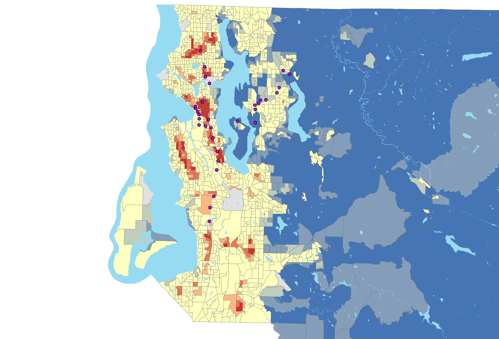
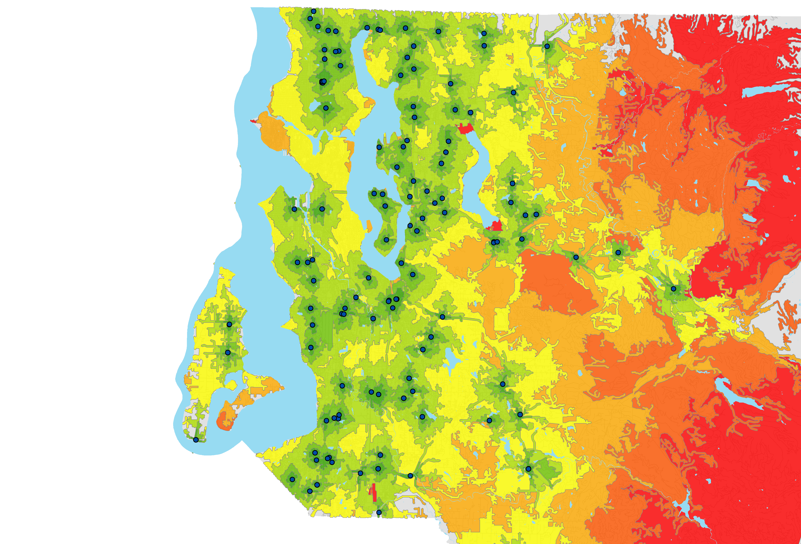
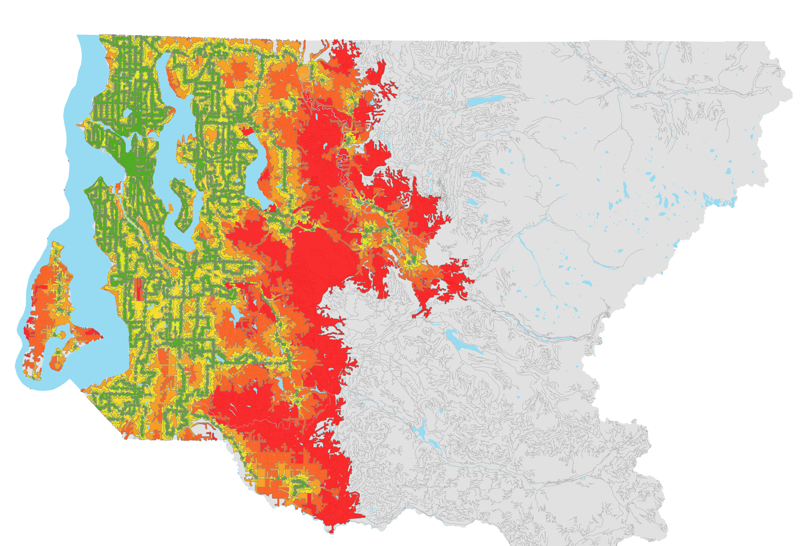
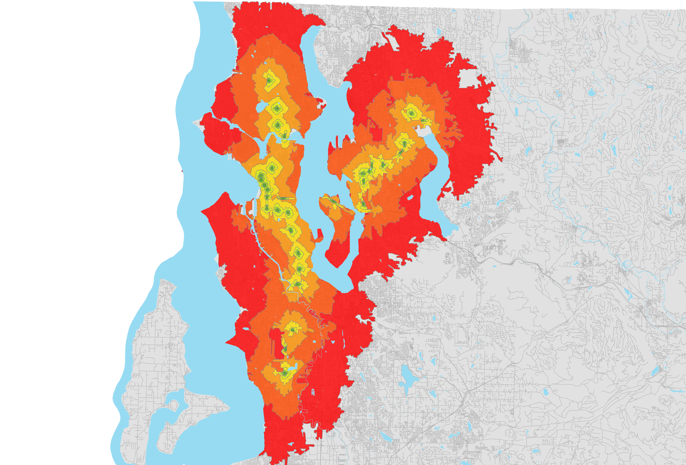
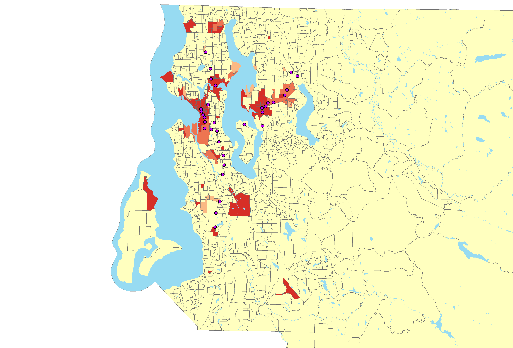

What's Needed Where? Link Light Rail Analysis in Seattle
Introduction
In the Greater Seattle Area, there has been a push to provide more public transit options for communities. During rush hour, there is a lot of traffic on the roads, which could be reduced with more public transit options. This traffic leads to longer commute times for everyone, since there are a lot of cars on the road, and they can slow down buses. In the Greater Seattle Area people need access to public transit for various reasons including work, school, daycare, shopping, medical appointments, entertainment, and visiting friends and family. There are also people who cannot afford cars, so they are stuck with only public transit options which can be limited. Public transit options can be especially limiting for people who need to commute to get to work and public transit is their only option.
The area of study for this GIS project is the Greater Seattle Area. This project will focus on finding the general areas for new light rail services rather than specific locations or addresses. There is a great need for more public transit access in general around Seattle. This has already started becoming less of a problem because Sound Transit is planning to build new Link Light Rail stations and lines over the next ten to twenty years throughout the King County area. This area is experiencing great population growth. Combining existing population with new people means they all need some form of transportation to get different places, which causes a lot of traffic and congestion. There is a lot of opportunity for more public transportation in the Seattle area.
This project aims to answer the question of which areas in the Greater Seattle Area would benefit most from increased light rail access, and whether or not there are gaps in the Link Light Rail System. The purpose of this project is to consider the current and proposed light rail lines to determine where new lines are needed most. This project investigates where people need better access to public transit and compares that to where the Link Light Rail stations are in the Seattle area. This analysis will determine where to place new Link Light Rail stations to be the most impactful for the most people. This study will include multiple public transit options and find where there is the least access for people with low incomes. Then the focus of the project is going to be on the Link Light Rail system. This paper will cover the methods used for the project and research, a discussion of the results, a literature review based on scholarly journal articles about light rail and GIS in general, and a conclusion and reflection.
Originally the project included questions like: What can be done to help the people in these areas access transit? Including some smaller questions like: What kind of people need access to public transit? Is it commuters, so they have less of a commute time? People living in unfortunate circumstances who need access to public transit? As research and data was collected the focus became where new lines are needed most, especially for people with low income.
Methods
The project was planned using a multiple step process over the course of a few months. Initially there was a goals statement or project proposal that outlined the basics of the project. Next, there was a period of studying material related to light rail projects in Seattle to understand better why and where access should be. There was also a peer review at this time to obtain input from other people about the project. Then finally a workflow was created to outline the analysis process to facilitate the process and make it go smoother. After that the analysis began and the project became fully formed.
Next, details about the project are listed. The extent for this project is the Greater Seattle Area which includes areas South, North, and East of Lake Washington. The projection used throughout the project is NAD 1983 HARN StatePlane Washington North (US Feet) and the geographic coordinate system is GCS North American 1983 HARN. The enumeration unit used for the population and median household income is block groups; parcels are used for finding land value and vacant lots.
The data needed for finding where light rail is needed most is as follows: population density, household income, roads, and locations of bus stops, light rail stations and park and rides. This data is used to analyze where the need is greatest for increased public transit. The public transit and transportation data was obtained from Sound Transit and the King County GIS Data Portal. Accessing the most appropriate public transit data was a concern in the beginning of the project. When Sound Transit was contacted through email, they responded with links to the necessary data. The median income, population, and block group data came from the U.S. Census. For comparing where the need is compared to rail lines, the locations of the current and proposed stations is used to create service areas for the time it takes to walk to each station with network analysis.
The first step in the project was preparing the data for analysis. The data needed to be clipped to the King County base map since that is the area of focus. Roads, park and rides, bus stops, block groups, and Link Light Rail stations were clipped to the King County boundaries. After that the income and population data was prepared in Excel by cleaning up the tables and getting them ready to be joined to the King County block groups polygons. After the income and population data was joined to the block groups polygon, population density was calculated. Once the data was in the shapefile, then they were classified to create an index. The population data was broken into five classes with one being low density and five being high density. Whereas the income data used five classes where one was high income and five being low income. The two numbers were then added together to create an index from two through ten. This was done to find the areas where there is low income and high population density. Hot spot analysis (Getus-Ord Gi*) was used to find clusters of places where there is high density and low income. This resulted in a map with hot and cold spots depending on where the values clustered. Some of the block groups did not contain data about income, so there are some gaps in the population and income index map.
Figure 1: Hot spot map of the population density and income index.
The land value map was done in a similar way with hot spot analysis. The parcel shapefile contained the land value data, so spatial join was used to join the parcels to the block groups. The block groups then have the average land value across all parcels inside the specific block group attached. After the average land value is calculated, then hotspot analysis was used to find hot and cold spots across King County.
Figure 2: Service areas around each Park and Ride in King County based on driving.
In order to prepare for the network analysis, new fields were created in the King County roads feature to prepare for the network analysis. These fields are the length of each road in miles, drive time in minutes for service areas, and walk time in minutes for service areas. Using the calculate geometry tool, the length was calculated in miles and stored in the appropriate field to be used in the network analysis later. After these fields are added it leads to calculating drive time in minutes and walk time in minutes for each segment of road. The calculation for drive time is based on the fact that time = distance / rate. For the drive time in minutes the length in miles was divided by the speed limit for each segment of road. For calculating walk time in minutes the length of the road segments in miles was divided by 3 MPH (assumed walking speed). After the new fields were populated it was time to set up the network dataset. The network analysis was set up to merge the polygons by break value. The break values were 1, 2, 4, 8, 16, 32, 64, and 128 minutes. This was done for both walk time and drive time. One limitation of the project is that there is no distinction between the types of roads for the network analysis, so the walk time calculations may use highways or roads where people would not normally walk.
Vacant lot data was used from the King County data portal to locate the vacant parcels in King County. The way the data is set up, it is difficult to know which lots are exactly vacant because the data does not explain itself well enough. The data with vacant parcels was joined to a shapefile with the locations of all parcels in King County. Then the parcels that are labelled vacant were exported to a new shapefile to highlight their locations. Another limitation is the vacant parcels. Since the vacant lot data came from a table with not much documentation on it, it was difficult to know which parcels are vacant.
Results
For the network analysis, the bus stops are mostly evenly spread throughout Seattle except north of Lake Washington. Some rural areas are also a little concerning with less bus service, but light rail would most likely not be expanded into those areas anyway. This is because there are fewer people living in rural areas, so there would not be enough riders to support a light rail system. There are a couple gaps in the map with the service areas of bus stop service, but that map also does not take into account other bus transit centers. So, the bus coverage may be more spread out than the map portrays. Also on the map of the time it takes to drive to park and ride lots the coverage is pretty spread out through the Seattle area. More coverage may be needed in places such as west of Queen Anne because it takes over half an hour to drive to a park and ride from there.
Figure 3: Service areas around each bus stop based on walking.
The map of the walk time to the Link Light Rail stations shows there are some major gaps in the system built so far. Places such as between West Seattle and White Center are very cut off from any light rail service. This area also has high density and low income which will be described more later. Another area with very little access is south of Lake Washington in the Renton area. This area actually has a mostly average density and income, but there are a lot of people living in this area. Again, west of Queen Anne has very little coverage on this map. Service could also be expanded further into North Seattle.
Figure 4: Service areas around each rail station based on walking.
Based on the index of low income and high density it looks like that some of the places that need light rail most is West Seattle, Delridge, and White Center. Tukwila and Renton would also benefit from expanded light rail. It also looks like northern Seattle is in need of expansion. One limitation of the study is that it is hard to tell where the vacant lots are and the data may not be accurate. Although, there is most certainly many areas where there are vacant lots that could be turned into park and rides. Ultimately the data used for vacant lots is not very helpful for my project, so it was not used.
Figure 5: Hot spot map of clusters of high land value in King County.
Currently it seems like the light rail is being expanded into areas where land value is higher. The light rail system was initially built in areas with high percentages of minority and low income populations where land value is not as high (United States 4-48). This first segment was originally described as a “starter system” (Pryne). Now light rail is being expanded into areas with higher land value because there is more political and financial support in those areas. Often light rail transit is built where the greatest political and financial support is located (Cohen-Blankshtain 359).
Literature Review
This project is aimed towards people who need increased access to public transit through light rail service. Light rail stations and lines in this study are built for the purpose of transit. When determining where light rail lines will be located, reducing traffic congestion is important. When there are no light rail lines in an area the traffic is dramatically worse (Anderson 2793). An additional benefit of building light rail lines and stations is the generation of more jobs and opportunities than road construction (LeRoy 57).
Many studies explore the need for public transit, especially for light rail. The benefits include more efficient travel, sustainable growth, job creation, reduced greenhouse gasses, and benefits to residents near light rail stops. Cities are restoring or expanding light rail because freeways cannot handle transportation needs (Allen 76). It is also important to create rail lines because some people cannot afford a car, and public transit is the only method of travel for them (LeRoy 58). As Edward Ziegler points out, there is not enough money to fund both roads and light rail in the future and a push towards an automobile-free built environment is needed in order to create sustainable growth (99; 93).
Public transit, including light rail, benefits both the environment and people. “Public transportation is the most effective way to reduce tailpipe emissions in this country” (LeRoy 56). Transportation sources are one of the leading causes of greenhouse gas emission in the United States (Silverman 775). Individual residents near a new light rail stop also report benefits. In a study conducted by Barbara Brown, the participants who rode on new light rail routes were more satisfied with their neighborhood and were more positive about transit oriented development (5).
GIS is both a system for processing information and for creating and manipulating spatial images (Pickles 25). GIS maps are powerful and can define what is legitimate data while shaping debate and changing the way people think about issues (Dennis 2043). In GIS studies, accurate information needs to be gathered and presented in a straightforward way since the finished maps can define which data is considered legitimate. It is important to remember that GIS maps are not neutral and can have problems in representation (Harris 101). As much as possible the data in this study was carefully considered to ensure it was accurate and the resulting information presented clearly. It is also important to remember that GIS maps can be interpreted differently by various people. Further discussion of the maps in this project by others could increase understanding of the results and refine the maps themselves.
Conclusion & Reflection
In the next few years Sound Transit is completing a large expansion of the Link Light Rail System, but it still will not be in key areas. So far Sound Transit has done a great job with the light rail system and will probably continue to expand into more areas. Based on all the separate maps created for this project it seems like the areas that are most in need of new transit are the West Seattle area, Burien area, Renton area, the Queen Anne area, and the north Seattle area. A follow up project would be finding where rail lines could be physically placed. This follow up project could include where new rail lines could be built along roads. It could also look at where new Park and Ride lots could be located to increase access to transit.
This project combined all the skills I learned in previous classes. It helped me consider the importance and impact of GIS maps in sharing information and making decisions. The project helped me practice formulating questions, researching a topic, gathering data, creating maps, and interpreting results. I was able to pursue my own ideas for a project and create something that has personal value to me. I can share my knowledge about light rail in terms of GIS. Studying light rail has now made me more aware of the importance of mass transit and the benefits of light rail. It also shows the inequalities in the Seattle area such as, unequal distribution of wealth, unequal land value, and lack of transportation options. This assignment has taught me how to pursue a topic on my own and create a substantial GIS project. This experience has helped me prepare for my professional career.
Link to full document and referencesBack to projects